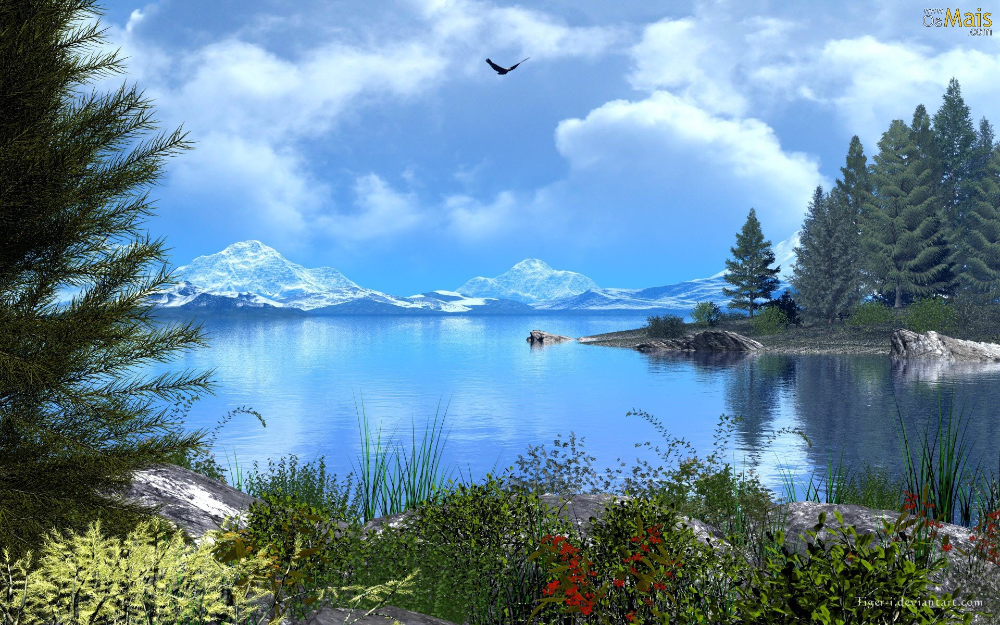

Observe a imagem a seguir:
Agora, tente diminuir o tamanho da sua viewport.
Percebeu como a imagem não se adaptou ao tamanho da sua tela (isso se você ao menos conseguiu ver ela direito). Isso acontece porque ela não está responsiva, ou seja, ela não se adapta ao tamanho da tela
Para um site ter sucesso, é muito importante que ele possa ser visto em qualquer tipo de dispositivo e tamanhos de telas, ou seja, é preciso que ele seja um site responsivo. Para isso, podemos utilizar diversas técnicas.
Com as CSS, podemos verificar o tamanho da tela atual e estabelecer um limite máximo e um limite mínimo para algo escrevendo: @media only screen and (min-width: ?px) and (max-width: ?px)
Essa é uma boa opção caso queiramos retirar algo por completo do site caso a tela seja muito pequeno (ou muito grande)
Essa imagem foi configurada para desaparecer quando a largura da tela for menor que 900px. É bom lembrar, entretanto, que a imagem escondida também consome largura de banda, por isso não é recomendável o uso de imagens grandes, como as que foram usadas nesse exemplo.